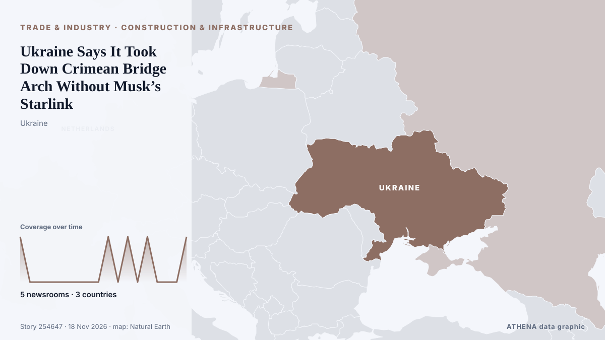

Commerce, industrie et infrastructures
SponsoriséPrésenté par  Cybernetics and Artificial Intelligence Lab Welcome to the Cybernetics and Artificial Intelligence Laboratory, established at the Department of Business Administration of the National and Kapodistrian University of Athens. The lab is headed by Professor Dimitrios Thomakos. The lab aims to do research that can be published in top venues. Our research uses tools and methods of Artificial Intelligence, and lies in the following areas: - Forecasting - Decision making - Cyber security - Finance We are always looking forward to collaborating with exceptional students!
Cybernetics and Artificial Intelligence Lab Welcome to the Cybernetics and Artificial Intelligence Laboratory, established at the Department of Business Administration of the National and Kapodistrian University of Athens. The lab is headed by Professor Dimitrios Thomakos. The lab aims to do research that can be published in top venues. Our research uses tools and methods of Artificial Intelligence, and lies in the following areas: - Forecasting - Decision making - Cyber security - Finance We are always looking forward to collaborating with exceptional students!
Les titres sont affichés en anglais, tels que publiés.

Construction et infrastructuresUkraine Says It Took Down Crimean Bridge Arch Without Musk’s Starlink
Ukraine brought down a major section of the Crimean Bridge using drones and missiles without Starlink or Starshield, relying on a homegrown communications system. de Kyiv Post
| 5 nov. | 105 |
|---|---|
| 6 nov. | 75 |
| 7 nov. | 44 |
| 8 nov. | 49 |
| 9 nov. | 118 |
| 10 nov. | 145 |
| 11 nov. | 109 |
| 12 nov. | 94 |
| 13 nov. | 85 |
| 14 nov. | 78 |
| 15 nov. | 65 |
| 16 nov. | 117 |
| 17 nov. | 77 |
| 18 nov. | 20 |
Irish man charged with destroying US military C-130 aircraft
NEW YORK: An Irish man has been charged with damaging a US military C-130 aircraft at an airport in Ireland in an attack that left the plane “effectively destroyed”, prosecutors said on Tuesday. de New Straits Times
FAA halts installation of routers that led to ground stop
The Federal Aviation Administration has paused the installation of the routers that were linked to last week’s national ground stop, and turned off any Juniper routers that were already installed. de The Korea Times
Interview: Hong Kong has key role in keeping global shipping stable, pushing green shift: ICS chairman
The third Hong Kong Global Maritime Trade Summit brought together senior government representatives and maritime industry leaders to discuss the. de Cyprus Shipping News
China's 15th Five-Year Plan presents opportunities for growth of Asia-Pacific and beyond: Xi
Chinese president urges regional economies to uphold multilateralism, deepen cooperation in AI, digital trade. de Express Tribune
As string of tech outages raises alarm, Trump says everything is ‘fine’
There were major outages to Microsoft's e-mail services, banking services and the US National Security Agency. de The Straits Times
CMA CGM Set to Surpass Maersk as World's Second-Largest Container Line by 2027
CMA CGM is projected to overtake Maersk as the second-largest container line by 2027, reshaping the global shipping landscape. de SeaNews Türkiye
Egypt Rejects Turkey-Libya Maritime Memorandum at UN
Egypt also disputed maritime boundaries declared unilaterally by Libya and rejected energy cooperation agreements signed by Turkey and Libya. de To Vima (English)
Energos awards FSRU conversion gig to Hanwha Power
US-based Energos Infrastructure, controlled by asset manager Apollo, has awarded a turnkey contract to Hanwha Power, part of South Korean conglomerate Hanwha, to convert an existing LNG carrier into… de LNG Prime
Apple suffers outage sparked by software update
Apple services appear to have been restored after an update went awry and led to an outage that lasted for hours. de Sydney Morning Herald
China, Canada expand tariff relief after Carney-Xi meeting
China offers tariff cuts on Canadian pork and seafood, as Canada extends exemptions for Chinese steel and aluminium. de Al Jazeera English
‘How long can he endure being confined to a ship?’: Wife of man stranded in Karachi
Thailand to eliminate tariffs on US exports under trade deal: Trump
The US is Thailand’s largest export market, accounting for 24.6% of shipments so far this year, making the negotiations particularly significant for the Southeast Asian economy. de TRT World
Russian strikes hit two major Kyiv bridges
Kyiv Mayor Vitali Klitschko said Russian forces struck two bridges straddling the Dnipro River in the capital late on Monday, along with some other critical infrastructure, as Moscow sent drones and… de Cyprus Mail
Tesla confirms €3B Cybercab factory at Giga Berlin for up to 1M a year
Tesla is going to build the Cybercab in Germany. de Electrek
Ukraine strikes Crimean bridge for second day as Russia pounds Kyiv bridges
Ukraine struck the Crimean bridge for a second day as Russia reported shooting down a record 1,441 drones, while Moscow retaliated with attacks on Kyiv's bridges and energy infrastructure. de The Jerusalem Post
Honda Faces New Investigation Over Stop-Start Failures
The National Highway Traffic Safety Administration has opened an investigation into more than 1 million Honda vehicles in the United States over reports that engines have failed to restart after… de Insurance Journal
US probes why a router installation sparked mass flight grounding
The company L3Harris has said it is cooperating with the official investigation into what went wrong. de The Straits Times
Oil Tanker Transiting Strait Of Hormuz Attacked Near Oman, 4th In 24 Hours
The Iran Navy said the tanker was travelling in a restricted area with its navigation switched off. de NDTV
Scotland’s first snow warning of the season comes into force
The Met Office yellow weather warning came into force early on Tuesday. de Evening Standard (London)
Anwar: Malaysia seeks French support for Asean Power Grid
KUALA LUMPUR: Malaysia is seeking support from the French government and industry for the Asean Power Grid, Prime Minister Datuk Seri Anwar Ibrahim said. de New Straits Times
Singapore to ‘carefully’ study new US advanced semiconductor export controls
Singapore, Malaysia and Indonesia are among the countries affected by the new rule. de The Business Times
Iran's army Navy says fourth tanker hit by mine east of Strait of Hormuz
Iran's Navy said on Monday that a fourth oil tanker, within the past 24 hours, had caught fire after striking a naval mine in what it described as a restricted area east of the Strait of Hormuz… de Deccan Herald
United Airlines says ‘widespread’ system outage resolved
Airline acknowledges ‘technology issue that delayed flight departures’ in latest high-profile outage to affect Americans United Airlines said on Monday that it had resolved a widespread system… de The Guardian
US airports slowly return to normal after three days of disruption
US air travel was slowly returning to normal on Monday after three days of widespread disruption following an extraordinary no-takeoff order issued by US aviation authorities. de Africanews (English)
Port of Gothenburg eyes large-scale biogas bunkering in 2027
Sweden’s Port of Gothenburg is gearing up to launch a new LBG liquefaction plant next year to enable large-scale liquefied biogas bunkering. de Offshore Energy
US, 9 partners sign agreement to secure AI supply chains
San Francisco Declaration aims to protect sensitive technologies and critical infrastructure, strengthen cooperation on supply chain security. de Anadolu Agency (English)
Iran says 2 oil tankers hit mines, catch fire in Strait of Hormuz
IRGC Navy says it mined US-created southern route through strait. de Anadolu Agency (English)
Iran FM says neighbouring Asian states back two-day Hormuz plan
Tehran has said it is ready to reopen the strait within two days if the US agrees to its conditions. de The Straits Times
US air travel disruptions continue into third day
New York: US air travel disruptions continued for a third day with more than 5,200 flights already affected on Sunday, but Transportation Secretary Sean Duffy predicted a return to normalcy by Monday… de Deccan Herald
Trump Administration Asks for Billions to Overhaul FAA. Democrats Question How Money Was Spent
The Trump administration is requesting $50 billion to modernize the aging FAA air traffic control system following a nationwide flight grounding due to technical issues. de Arab News
Clothing factories shut in Bangladesh as workers strike over pay
Workers are striking over demands for a minimum wage of 30,000 taka (£182) a month. de BBC News
2 violating oil tankers explode in south Hormuz Strait: IRGC
TEHRAN, Nov. 15 (MNA) – The Public Relations Office of the IRGC Navy Force has announced that two oil tankers caught fire and exploded in southern Strait of Hormuz. de Mehr News (English)
Yemeni forces' retreat leaves Houthis in control of key Red Sea waterway
Saudi-backed forces say they are moving troops from the Bab al-Mandab Strait to protect the interim capital, Aden. de BBC News
2 planes collide on the ground in Miami, only minor injuries reported
The accident involved a Copa Airlines Boeing 737 aircraft with 172 people aboard and a UPS Boeing 767 cargo plane. de Courthouse News